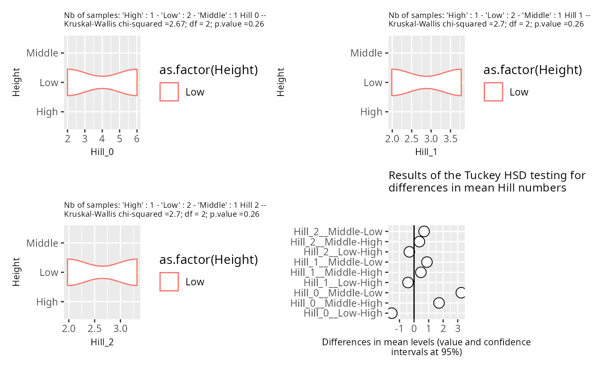

Auto-wrap (and optionally resize the font of) the title, subtitle, caption
and axis labels of a ggplot2 plot using stringr::str_wrap(). Useful to tidy
up long titles produced automatically by other MiscMetabar plotting
functions, in particular before combining several plots with patchwork.
Usage
reshape_ggplot(
plot,
width = 60,
width_subtitle = width * fontsize_title/fontsize_subtitle,
width_labs = width * fontsize_title/fontsize_labs,
width_caption = width * fontsize_title/fontsize_caption,
fontsize_title = 10,
fontsize_subtitle = 7,
fontsize_labs = 8,
fontsize_caption = 7
)Arguments
- plot
(required) A ggplot2 object.
- width
(int, default 60) The wrapping width (in characters) of the title. Also used to compute the default value of the other widths.
- width_subtitle
(int, default
width * fontsize_title / fontsize_subtitle) The wrapping width of the subtitle.- width_labs
(int, default
width * fontsize_title / fontsize_labs) The wrapping width of the x and y axis labels.- width_caption
(int, default
width * fontsize_title / fontsize_caption) The wrapping width of the caption.- fontsize_title
(int, default 10) Font size for the title.
- fontsize_subtitle
(int, default 7) Font size for the subtitle.
- fontsize_labs
(int, default 8) Font size for the x and y axis labels.
- fontsize_caption
(int, default 7) Font size for the caption.
Examples
# \donttest{
if (requireNamespace("stringr") && requireNamespace("patchwork")) {
df_mini <- prune_samples(
sample_names(data_fungi_mini)[1:5],
data_fungi_mini
)
patchwork::wrap_plots(lapply(
hill_pq(df_mini, "Height", vioplot = TRUE),
reshape_ggplot,
width = 45
))
}
#> Warning: NaNs produced
#> Warning: NaNs produced
#> Warning: NaNs produced
#> Warning: NaNs produced
#> Warning: NaNs produced
#> Warning: NaNs produced
#> 3 out of 3 Hill scales do not show any global trends with you factor Height. Tuckey HSD plot is not informative for those Hill scales. Letters are not printed for those Hill scales
#> Warning: Groups with fewer than two datapoints have been dropped.
#> ℹ Set `drop = FALSE` to consider such groups for position adjustment purposes.
#> Warning: Groups with fewer than two datapoints have been dropped.
#> ℹ Set `drop = FALSE` to consider such groups for position adjustment purposes.
#> Warning: Groups with fewer than two datapoints have been dropped.
#> ℹ Set `drop = FALSE` to consider such groups for position adjustment purposes.
#> Warning: Groups with fewer than two datapoints have been dropped.
#> ℹ Set `drop = FALSE` to consider such groups for position adjustment purposes.
#> Warning: Groups with fewer than two datapoints have been dropped.
#> ℹ Set `drop = FALSE` to consider such groups for position adjustment purposes.
#> Warning: Groups with fewer than two datapoints have been dropped.
#> ℹ Set `drop = FALSE` to consider such groups for position adjustment purposes.
#> Warning: Removed 9 rows containing missing values or values outside the scale range
#> (`geom_segment()`).

# }